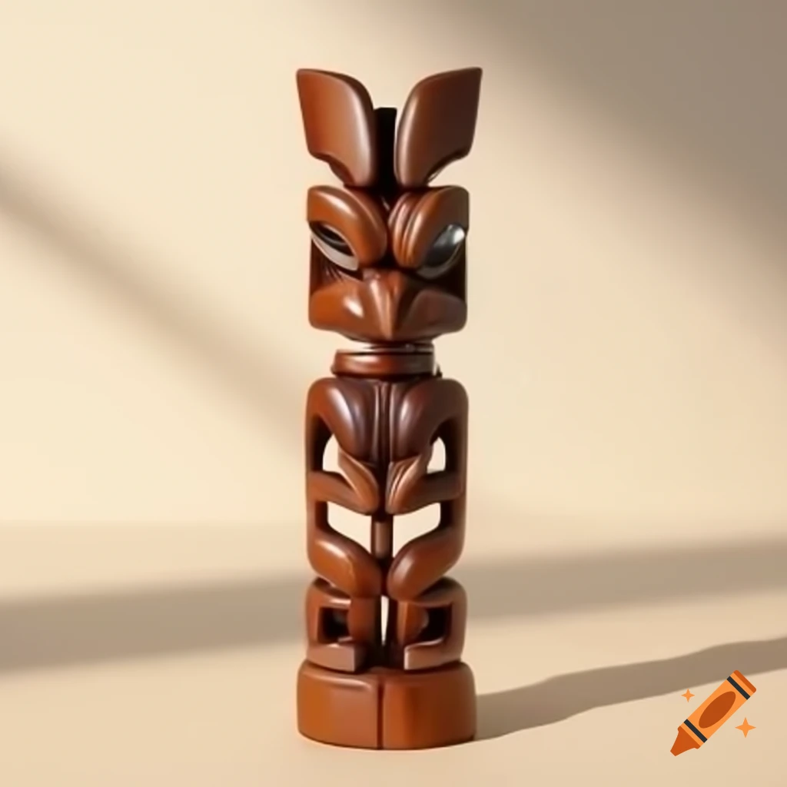
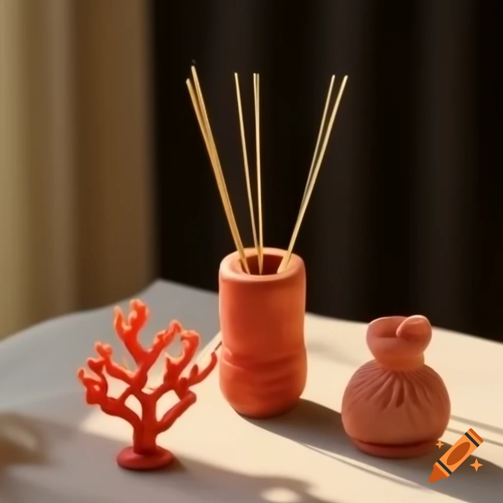
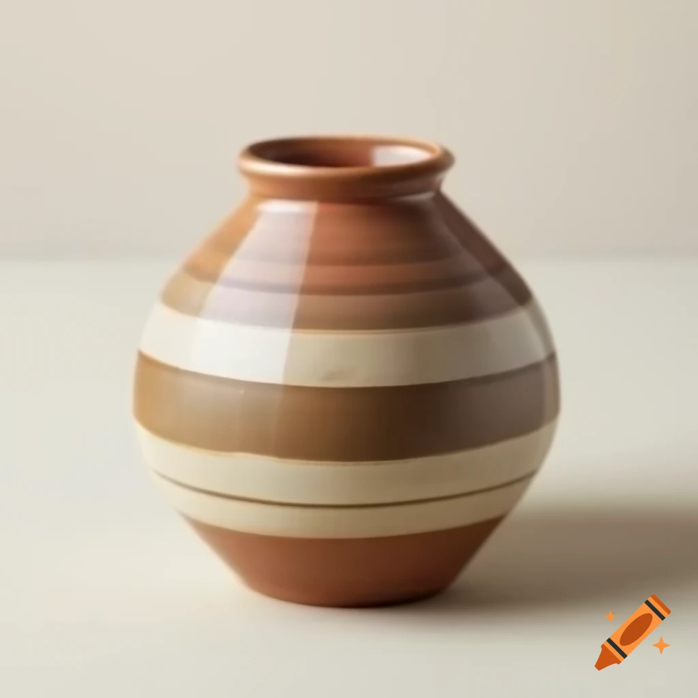

Souvenir Shop

Starbone Totem
From Archaeology Collection: Hand-carved wooden totem, symbol of local tribal strength and protection.
$49.99

Coral Queen Incense
Inspired by Histories Collection: Fragrant incense inspired by ancient Deep Ur rituals for cleansing and meditation.
$14.99

Mini Ceramic Pot
From Archaeology Collection: Mini replica of a fired clay cooking pot with geometric painted bands.
$29.95
Bone Awl Replica
From Anthropology Collection: Polished bone awl used for sewing leather and textiles, crafted in Iron Age style.
$19.50